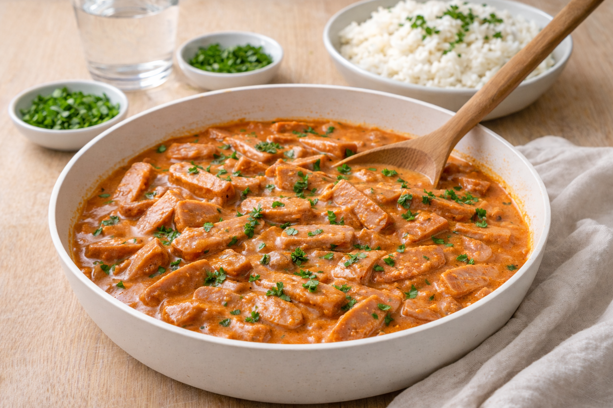

Korvstroganoff
Snabb och barnvänlig korvstroganoff med ris. Perfekt när du vill ha något gott på 20–30 minuter.

Ingredienser
- 500 g falukorv, strimlad
- 1 gul lök, hackad
- 2 msk tomatpuré
- 2 dl matlagningsgrädde
- 1 dl crème fraiche (valfritt)
- 1 tsk paprikapulver
- Salt och svartpeppar
- 1 msk smör/olja
Så lagar du
- Fräs lök i smör/olja tills den mjuknar.
- Lägg i falukorven och stek 2–3 minuter.
- Rör ner tomatpuré och paprikapulver.
- Häll i grädde (och crème fraiche om du vill). Låt sjuda 5–8 minuter.
- Smaka av med salt och peppar. Servera med ris och gärna gurka/paprika.
Tips & variationer
- Vill du göra den billigare: använd bara grädde eller bara crème fraiche.
- Gör mer sås och använd som matlåda.